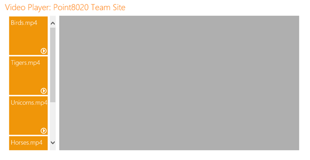
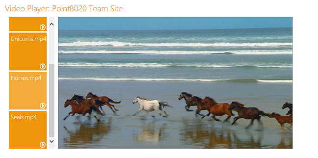

Description
Provided by:
This solution is based on the SharePoint-hosted app template provided by Visual Studio 2012. The solution iterates over each document library in the host website and lists the tiles for each MP4 video in the app. When the user clicks a given title, the app dynamically renders an HTML5 video player and plays the video.
Prerequisites
This sample requires the following:
-
Visual Studio 2012
-
Office Developer Tools for Visual Studio 2012
-
Either of the following:
-
SharePoint Server 2013 configured to host apps, and with a Developer Site Collection already created; or,
-
Access to an Office 365 Developer Site configured to host apps.
-
Key components of the sample
The sample app contains the following:
-
The Default.aspx webpage, which is used to enumerate through each document library in the host website, and render tiles for each MP4 video in the app.
-
The Point8020Metro.css style sheet (in the CSS folder) which contains some simple styles for rendering tiles.
-
The MetroPlay.png image which is used as the background in the tile styles.
-
The AppManifest.xml file, which has been edited to specify that the app requests Full Control permissions for the hosting web.
All other files are automatically provided by the Visual Studio project template for apps for SharePoint, and they have not been modified in the development of this sample.
Configure the sample
Follow these steps to configure the sample.
-
Open the SP_AutohostedVideoPlayer_cs.sln file using Visual Studio 2012.
-
In the Properties window, add the full URL to your SharePoint Server 2013 Developer Site collection or Office 365 Developer Site to the Site URL property.
No other configuration is required.
Build the sample
To build the sample, press CTRL+SHIFT+B.
Run and test the sample
To run and test the sample, do the following:
-
Press F5 to run the app.
-
Sign in to your SharePoint Server 2013 Developer Site collection or Office 365 Developer Site if you are prompted to do so by the browser.
-
When prompted to do so, indicate that you trust the app.
Note that the app does not upload and store the MP4 videos that it plays; rather, it plays videos that you have uploaded to a SharePoint list. With no videos on the hosting site, the app appears as shown in Figure 1.
Figure 1. The app with no videos on the host site

Once the videos are loaded to a SharePoint list, the app then renders them as tiles, as shown in Figure 2.
Figure 2. The app with videos uploaded to SharePoint list

Finally, when the user clicks the tile, the associated video is rendered in the frame, as shown in Figure 3.
Figure 3. The video rendered in the app frame

Troubleshooting
Ensure that you have SharePoint Server 2013 configured to host apps (with a Developer Site collection already created), or that you have signed up for an Office 365 Developer Site configured to host apps.
Change log
First release: January 2013.